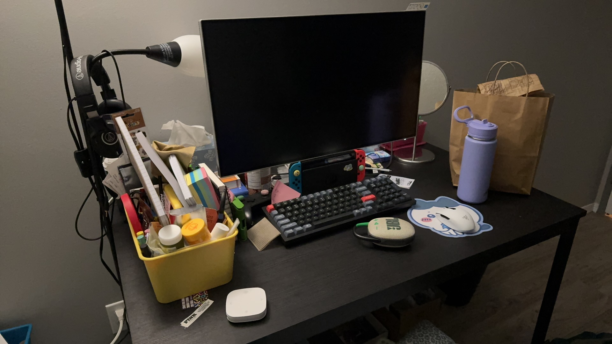

Desktop Updated

I unboxed some electronic goodies today: a Bluetooth mechanical keyboard, a Bluetooth mouse, and a Bluetooth speaker. Wireless has been so important since I started working with more devices and also since there're fewer and fewer ports designed onto them.
That leads me to wonder about the importance of being physically present and being felt physically for these devices when using them. When I started using the Wacom tablet to paint, I had to transition from looking down to looking up for a while, unlike with the drawing display. The feeling of using a tablet pen on the surface of the painting pad and display is also more slippery than in conventional ways of creating.
One can definitely adjust based on the pen pressure's sensitivity, and software like Corel Painter allows for real mimic paint mixing, presented through a visual palette to make it more intuitive as well. Still, this leads me to question whether it is fair for me to think about and process the making of digital creations/craft the same way I was taught to think about craft in traditional, physical media.
How should I reflect on the making of the digital art/craft when working with digital devices?